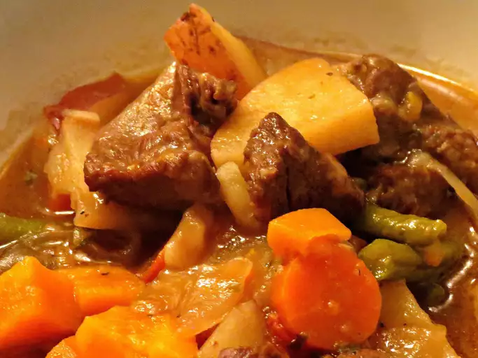

Beef Stew

How to make it
This is easy one pot dish. Simply to prepare and rich teast source of nutrions. Flank steak recipe proves that it's easy to make a tough cut of beef flank tender and flavorful. Serve it over crusty buns or mashed potatoes — either way, enjoy!
Ingredients
- 3 tablespoons vegetable oil
- 2 pounds room temperature beef stew meat, cut into 1 1/2-inch cubes
- ½ cup all-purpose flour
- 1 yellow onion, roughly chopped
- teaspoon minced garlic
- 1 (32 ounce) carton low-sodium beef broth
- 1 (15 ounce) can crushed tomatoes
- 3 yellow potatoes, or more to taste, cubed
- 3 stalks celery, chopped
- 1 cup baby carrots
- 1 teaspoon dried basil
Steps
- Heat oil in a large pot over medium-high heat. Add meat, flour, onion, and garlic; cook and stir until browned, 10 to 15 minutes.
- Add broth, tomatoes, potatoes, celery, and carrots, then stir in Creole seasoning and basil. Bring to a simmer. Reduce heat to maintain simmer and cook, uncovered, until potatoes are soft, meat is tender, and gravy is thick, about 1 hour.